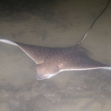
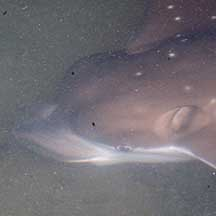
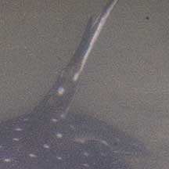
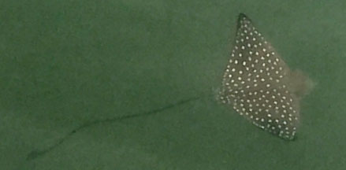

|
|
| fishes text index | photo index |
| Phylum Chordata > Subphylum Vertebrate > fishes > Order Rajiformes |
| Eagle rays Family Myliobatidae updated Dec 2020 Where seen? Sometimes seen on our reefy Southern shores, including partially enclosed lagoons at Tanah Merah and Sentosa. Elsewhere, the Eagle ray is associated with reefs, sometimes entering estuaries. It may swim close to the surface, occasionally leaping out of the water. It may also swim close to the bottom. It sometimes form large schools during non-breeding season. It is found almost worldwide in tropical waters, and some believe there may be as many as four species of spotted eagle ray. What are eagle rays? Eagle rays belong to Family Myliobatidae which include the Manta rays! According to FishBase: the family has 7 genera and 42 species. These fishes have the head above the disc-shaped body. In eagle rays, the jaws are powerful with large platelike crushing teeth in several rows. The tail is much longer than disc; venomous spine(s) are found in some species. They have a small dorsal fin. Some are known for their leaping ability high into the air. These fishes bear live young (viviparous) giving birth to 2-6 fully developed young. Features: Grows to about 3m wide, 8m long with the tail, weighing up to 230kgs. But more commonly about half that. One White-spotted eagle ray seen at Tanah Merah was about 60cm wide with a tail about three times longer. Triangular 'wings', upper body dark with spots evenly distributed over the body (no pattern of bands). In some, the spots are eye-shaped. The underside is white. A long thin whip-like tail with 2-6 venomous spines at the base. It has a bulging head with a triangular snout. |
 Aetobatus mula Large triangular 'wings' with white spots. Tanah Merah, May 11 |
 Eyes and breathing spiracles on the sides of the head. Triangular snout. |
 Venomous spines at the base of the tail. |
| Eagle babies: Mama Eagle ray gives
birth to live young, a litter of 2-4 pups after a gestation period
of probably a year. The ray is sexually mature at 4 to 6 years. What does it eat? It feeds on clams but also eats shrimps, crabs, octopus, worms, snails and small fishes. Human uses: The fish is eaten by humans and the tail is sometimes used as a decorative item. It is commonly caught in trawl nets and gillnets. Status and threats: Although the Eagle ray is not listed in Singapore's Red List, on the international IUCN Red List it is classified as Near Threatened. The fish naturally reproduces slowly and is threatened mainly by overfishing |
| Eagle rays on Singapore shores |
On wildsingapore
flickr
|
| Other sightings on Singapore shores |
 Labrador, Dec 16 Photo shared by Chi Yang |
| Family
Myliobatidae recorded for Singapore from Wee Y.C. and Peter K. L. Ng. 1994. A First Look at Biodiversity in Singapore. **from WORMS
|
Links
References
|